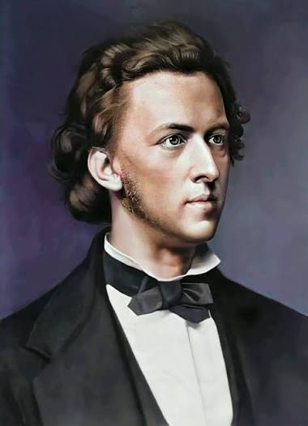
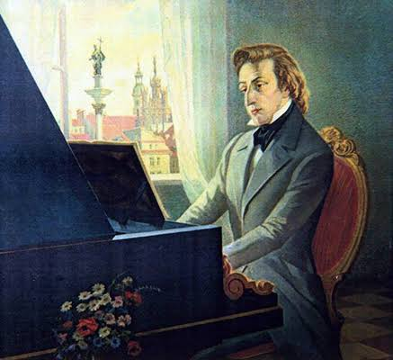
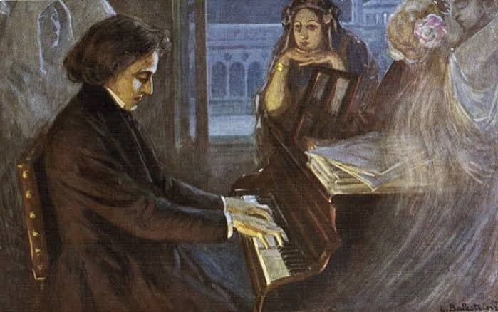

Фредерик Шопен

Биография: Ранние годы
Фредерик Франсуа Шопен родился 1 марта 1810 года в местечке Желязова-Вола близ Варшавы. Его отец, Николай Шопен, был французом, переселившимся в Польшу, а мать — полькой. С самого раннего детства мальчик проявлял исключительные музыкальные способности. Уже в возрасте шести лет он пытался самостоятельно воспроизводить услышанные мелодии на фортепиано и сочинять собственные небольшие пьесы.
Его первым и главным учителем музыки стал Войцех Живний. Заметив феноменальный талант ученика, он дал ему классическое образование, привил любовь к произведениям Баха и Моцарта. Вскоре молва о юном гении разнеслась по всей Варшаве: его начали приглашать выступать в салонах аристократии, где его называли «вторым Моцартом».
Годы становления и признания
В 1826–1829 годах Шопен обучался в Главной школе музыки в Варшаве под руководством композитора Йозефа Эльснера. Именно тогда сформировался его уникальный композиторский стиль, в котором классическая строгость формы гармонично переплеталась с глубоким романтизмом и мотивами польского народного творчества — полонезами и мазурками.
Осенью 1830 года, незадолго до начала ноябрьского восстания в Польше, Шопен покинул родину. Как оказалось позже — навсегда. Через Вену он направился в Париж, который в ту эпоху был культурной столицей Европы.
Парижский период и зрелое творчество
В Париже Шопен быстро завоевал признание местной элиты. Его виртуозная игра и утонченные манеры открыли ему двери в лучшие салоны города. Он подружился с ведущими деятелями искусства того времени: Ференцем Листом, Эженом Делакруа, Генрихом Гейне и Оноре де Бальзаком.
В отличие от многих своих современников, Шопен почти не давал масштабных публичных концертов в огромных залах — его изысканная манера игры лучше всего звучала в уютной обстановке литературных и музыкальных салонов перед узким кругом ценителей. Основную часть времени он посвящал композиции, создавая бессмертные ноктюрны, вальсы, прелюдии и этюды.
Известные произведения
Наследие Шопена почти полностью посвящено фортепиано. Его произведения поражают глубиной эмоций и техническим совершенством:
- Ноктюрн ми-бемоль мажор — одно из самых лиричных и узнаваемых произведений композитора.
- Фантазия-экспромт — виртуозная пьеса, полная стремительных пассажей и завораживающей мелодии.
- Вальс ми-минор — меланхоличное и изящное произведение позднего периода.

Сыграйте мелодию
Используйте клавиши A, S, D, F, G, H, J на клавиатуре или нажимайте мышкой
Послушайте музыку
Насладитесь шедеврами великого романтика:
Ноктюрн ми-бемоль мажор
Фантазия-экспромт
Вальс ми-минор

Интерактивные факты о композиторе
Нажмите на карточку, чтобы узнать подробности:
1. Необычная манера
Необычная манера игры: Фредерик Шопен обладал невероятно тонким и деликатным стилем игры. Инструмент звучал мягко и камерно, словно вел доверительную беседу.
2. Рояли Pleyel
Любовь к роялям Pleyel: Шопен признавал идеальными только рояли фирмы Pleyel, утверждая, что у них есть своя готовая звуковая аура.
3. Боязнь сцены
Боязнь сцены: За всю жизнь композитор дал всего около 30 публичных концертов, предпочитая уютные приватные салоны.
4. Память о родине
Память о родине: По его желанию, сердце композитора было перевезено в Польшу и покоится в базилике Святого Креста в Варшаве.
Экспресс-тест
В какой стране родился Фредерик Шопен?
